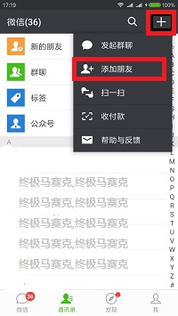
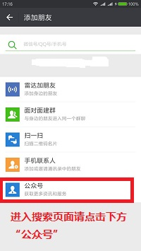
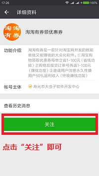
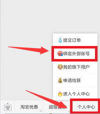
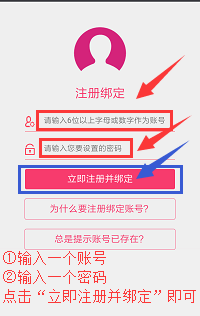

这是一个非常实用的公众号，大家没事的时候可以自己研究下，不过我们需要的是在公众号里注册绑定个账号而已！
为了方便大家的注册,安卓版2号-云软件无需下载即可注册！
只需打开手机微信关注公众号即可直接注册：
微信公众号名称搜索：淘淘有券领优惠券
或者 微信公众号搜索：taotaoyouquan
注册步骤图文教程：
第一步：打开手机微信，点击右上角“+”，点击“添加朋友”
如图：

第二步：点击最下方“公众号”按钮
如图：

第三步：输入：“taotaoyouquan”或“淘淘有券领优惠券”进行搜索
第四步：点击“关注”

第五步：点击最下方“个人中心”-“绑定外部账号”

第六步：输入注册信息完成注册绑定即可！
云账号2就是你注册时填写的账号，密码就是注册时填写的密码，输入在挂机软件中即可！

云账号2就是你注册时填写的账号，密码就是注册时填写的密码，输入在挂机软件中即可！